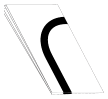
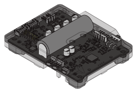
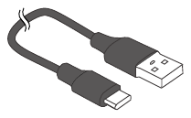
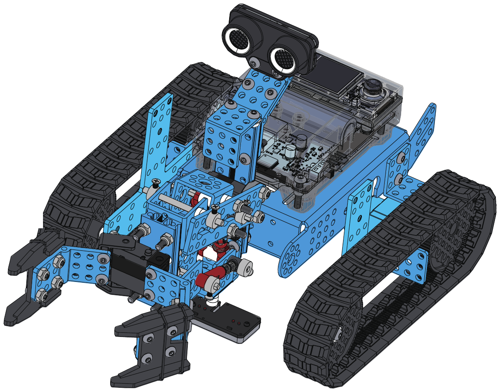

Everything the 20 sessions of this year call for, gathered from the per-session parts lists. Items are grouped by where they come from.
5 pieces from the kit · 11 classroom supplies
1 mBot2 kit per 2–3 students
| Class size | Kits needed |
|---|---|
| 12 students | 4–6 |
| 18 students | 6–9 |
| 24 students | 8–12 |
| 30 students | 10–15 |
already in the kit — nothing to buy, but these are the pieces this year actually uses
 | Line-following mapgraph paper · line for the offset explorer · or taped path · same track all laps · same track as Session 6 | Used in S3, S6, S7, S8, S13, S16 |
 | mBot2 Shieldcharged overnight · log battery level too · same battery level across laps | Used in S6, S8, S18, S20 |
 | USB cablechargers on before the session ends | Used in S10, S19 |
already in the add-on kit — nothing to buy, but these are the pieces this year actually uses
 | Rover, arms fittedfeasibility checks only · from Grade 8 — re-measure today · frozen config | Used in 11 sessions |
| Rover, assembledfrom Grade 8 | Used in 8 sessions |
you provide these — not in the kit
| Tablet + mBlock Weblibrary design notes · mBlock Python mode · spreadsheet, or paper grids · state diagram — deliverable | Used in 18 sessions | |
| Foam blocks2+2 review notes · NOT wooden blocks · failure log — 20 runs · foam blocks only — wood stalls the servos · run log on the wallThe things the gripper actually holds — small enough to fit between the arms and light enough to lift. Foam only. Wooden or hard plastic blocks strip the servo gears when the grip closes too far, and that damage is permanent. | Used in 7 sessions | |
| Printed cardsaward certificates · or spreadsheet · pitch structure card · printed offset scenarios · review checklist ×2 per team · rubric + example missions · scoreboard and score sheets · trace scenarios | Used in 7 sessions | |
| Stopwatch+ scoreboard · lap times · strict 5:00 | Used in 7 sessions | |
| Masking tapearena boundary · course build · delivery zone · in frame in the layout photo · mark the start pose · placement zones · taped line on the floor · the walked lineMasking tape, not electrical or duct tape: it must lift off the floor without leaving glue, and the Quad RGB sensor needs a matt surface. Shiny tape reflects unpredictably and the line follower loses the line. | Used in S4, S5, S9, S11, S13, S16 | |
| Craft kit (card, markers, tape)2-hour version onlylarge paper for the diagram · wall run-log sheets | Used in S7, S14, S15, S18 | |
| Color patchescolour markers on the course · red marker for the threshold · the pick marker · the placement zone | Used in S3, S11, S13 | |
| Ruler / tape measurecourse dimensions · tape measure for the calibration | Used in S3, S9, S15 | |
| Phone (video/angle)course rebuild photos · photograph the layout + tape measure | Used in S16, S20 | |
| Protractorhand-measuring the range · heading error | Used in S9, S10 | |
| Blindfoldthe control-theory theatre | Used in S5 |
for weekly prep — what to put on the table before each session
| S1 | Same Robot, New Language | Rover, assembled · Tablet + mBlock Web |
| S2 | Functions | Rover, assembled · Tablet + mBlock Web |
| S3 | Sensing in Python | Rover, assembled · Tablet + mBlock Web · Color patches · Ruler / tape measure |
| S4 | Logic & Refactor | Rover, assembled · Tablet + mBlock Web · Masking tape · Stopwatch |
| S5 | The Wobble, Explained | Masking tape · Blindfold · Printed cards |
| S6 | P-Control | Rover, assembled · Tablet + mBlock Web · Stopwatch |
| S7 | Measure It | Rover, assembled · Tablet + mBlock Web · Printed cards · Craft kit (card, markers, tape) |
| S8 | The D Term | Rover, assembled · Tablet + mBlock Web · Stopwatch |
| S9 | Dead Reckoning | Rover, assembled · Tablet + mBlock Web · Ruler / tape measure · Masking tape · Protractor |
| S10 | The Arms, in Python | Rover, arms fitted · Tablet + mBlock Web · Protractor |
| S11 | Pick & Place | Rover, arms fitted · Tablet + mBlock Web · Foam blocks · Masking tape · Color patches |
| S12 | Reusable Arm Code | Rover, arms fitted · Tablet + mBlock Web · Foam blocks |
| S13 | Navigate + Manipulate ✱ | Rover, arms fitted · Tablet + mBlock Web · Color patches · Foam blocks · Masking tape |
| S14 | Program Structure | Rover, arms fitted · Tablet + mBlock Web · Printed cards · Craft kit (card, markers, tape) |
| S15 | Design Sprint | Ruler / tape measure · Printed cards · Rover, arms fitted · Craft kit (card, markers, tape) |
| S16 | Build Sprint I ✱ | Rover, arms fitted · Tablet + mBlock Web · Masking tape · Foam blocks · Stopwatch · Phone (video/angle) |
| S17 | Build Sprint II + Code Review | Rover, arms fitted · Tablet + mBlock Web · Printed cards · Foam blocks |
| S18 | Build Sprint III | Rover, arms fitted · Tablet + mBlock Web · Foam blocks · Craft kit (card, markers, tape) · Stopwatch |
| S19 | Rehearsal & Pitch Prep ✱ | Rover, arms fitted · Tablet + mBlock Web · Stopwatch · Printed cards |
| S20 | Demo Day | Rover, arms fitted · Tablet + mBlock Web · Foam blocks · Stopwatch · Phone (video/angle) · Printed cards |